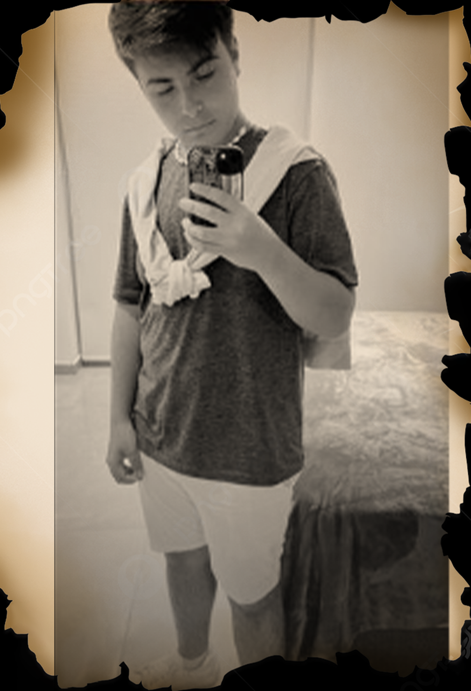

Sobre Mi
Soy estudiante de la carrera Lic. informática de la UNLP.
Programo desde el año 2019 y durante la cuarentena me profundicé.
Hoy en día tengo experiencia de trabajo con Machine Learning.

Machine Learning
Machine Learning me abrió las puertas para aprender Spacy, NLP (Natural Langueje Processing), Docker, JupyterLab
- NyA: Tobias Rozenfeld
- Apodo: Tobiroz
- Nacionalidad: Argentina
- Nacimiento: 9 de marzo de 2005
- Contacto: tobiroz2005@gmail.com
Biografia
Realizo Bots de discord, ademas diseño servidores con todas las funciones necesarias para que tu comunidad se sienta comoda en el gran espacio.

Developer Web
HTML
Aprendí en cuarentena cuando todavia no sabia como iba a seguir la vida, me la ingenié y con esa base de videos de youtube comencé, hoy en dia ya estoy profundizado y avanzado
CSS
Junto a HTML no sabia nada, no entendia como usarlo, que habia que hacer, pero al pasar los días y meses me di cuenta que era fundamental para los estilos de el esqueleto de mi pagina web
"Node JS"
comencé la programacion de bots de discord en python, me arrancó a ir super bien, pero en el momento de alojar el bot en algun servidor me pedia que el lenguaje de programación sea Node JS u otros, se me ocurrió comenzar a investigar y profundizarme, es el día de hoy que sigo programando bots y con Node JS
Inteligencia Artificial
NLP
NLP son las siglas de Natural Langueje Processing es como si fuese la neurona humana pero de la Inteligencia Artificial
Spacy
comencé a trabajar en una empresa que necesitaban Inteligencia artificial para reconocer distintos objetos y crear un chatbot voice assistant, por lo que generó que comience a leer que es Spacy y como funciona